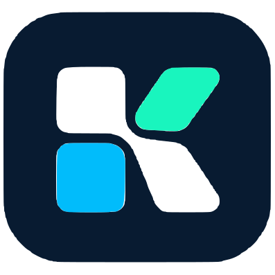

Buttons
.kl-buttonTHE KITLANE DESIGN LANGUAGE
A personal toolkit. A clear path. The foundations for an app that makes your software feel at home on every computer.
Explore the components
02 / IDENTITY
App tiles and a connecting lane form one recognizable mark. The original lettering stays part of the identity.
Leave one tile-width of clear space around the full logo. Keep the tiles in their original colors. Use the mark alone when space is tight.
03 / COLOR
Navy carries the structure. Cyan signals activity. Mint marks a healthy sync. Click a swatch to copy its value.
Text, surfaces, and states adapt to the selected theme.
Use ink on the bright brand colors. Every status gets a readable label.
04 / TYPOGRAPHY
Sora gives the brand its geometric weight. Inter keeps everyday controls, app details, and longer text easy to read.
Kitlane
Aa Bb Cc Dd Ee Ff Gg Hh Ii Jj
0123456789 & @ ! ?
Keep your software
setup in sync.
Install, update, and manage your tools across Windows, macOS, and Linux. Clear labels help you understand what's supported on this device.
editor.native / v2.4.0
Ready for your next machine.
Your software library
Connected computers
Everything you need to keep your setup in sync.
Updated a moment ago
Source verified by Kitlane
05 / COMPONENTS
Reusable controls with clear states, visible focus, and native browser semantics. Switch themes to see the entire system adapt.
.kl-button.kl-fieldA name you can recognize across your computers.
Enter a name for this profile.
.kl-textarea / .kl-check / .kl-skeleton.kl-nav / .kl-kbdUse stable labels and mark the active page. Shortcut hint example: Ctrl + K. These example links lead to the product patterns below.
.kl-badge / .kl-alertYour connected computers have the latest app list.
Kitlane hasn't verified this publisher. Check the source before installing.
Keep the app in your profile or review similar tools for this computer.
Check your connection and try again. Your changes are stored on this device.
.kl-tabs / .kl-accordionExample: a supported installer is listed for this platform and architecture.
Example: a similar tool is available. Review its file support and feature differences.
Example: no verified native package is listed for this distribution.
.kl-progress / .kl-dialog / .kl-toast06 / PRODUCT PATTERNS
A software list should explain what is installed, what needs attention, and what this computer can support. The following entries are illustrative.
Your app profile on this computer
| App | Version | On this computer | Action |
|---|---|---|---|
EditorVerified publisher | 2.4.0 | Installed | |
BrowserOfficial repository | 1.8 → 1.9 | Update available | |
StudioIn your profile | — | Unsupported on this OS |
Add the apps you want to keep on your computers. Kitlane will show what's available here.
Your desired app list is current. Availability is resolved for this device's OS and architecture.